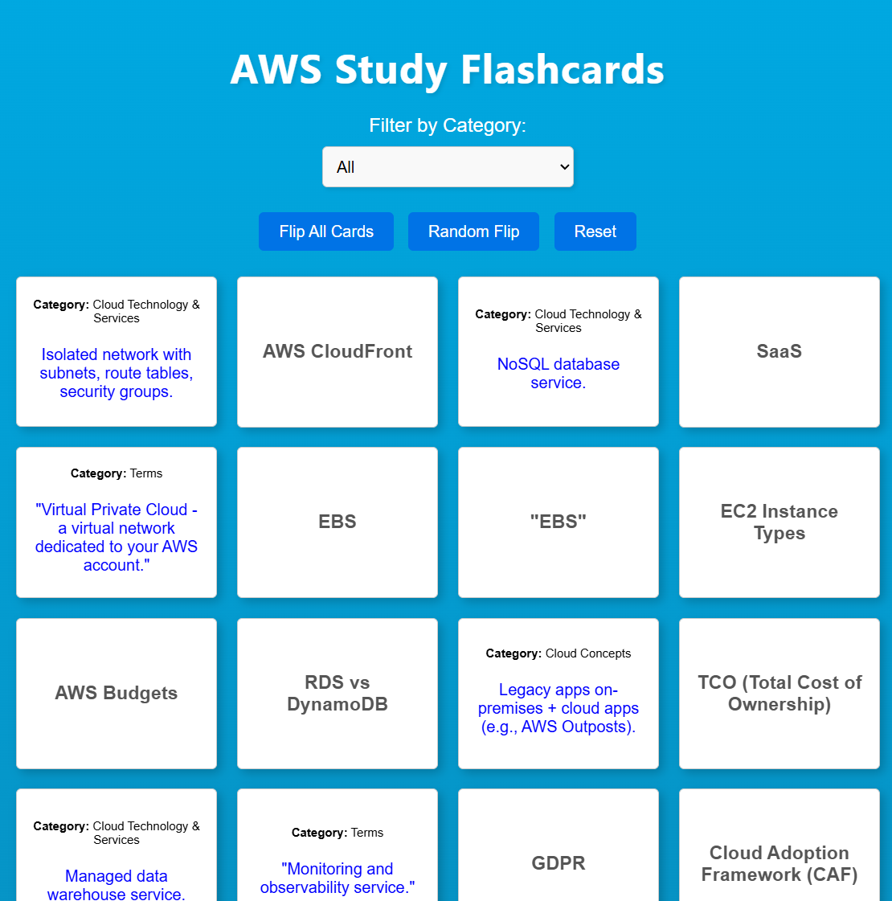

AWS Flashcard App - Flask Framework
A Flask-based flashcard app designed to help users study AWS concepts effectively. This project showcases my ability to build dynamic web applications using Flask, with a focus on interactivity and responsive design.

Overview
This project is a Flask-based flashcard app that allows users to study AWS concepts interactively. The app reads flashcard data from CSV files and dynamically renders them on the front end. Users can filter flashcards by category, flip cards to view definitions, and reset or randomize the cards for better engagement. It was a valuable learning experience in building dynamic web applications and managing data efficiently.
Technologies Used
- Flask |
- Python |
- HTML |
- CSS |
- JavaScript |
- CSV
Features
- Dynamic Flashcards: Flashcards are dynamically loaded from CSV files and rendered on the front end.
- Interactive UI: Users can flip cards, filter by category, and randomize or reset all cards.
- Responsive Design: The app is styled with CSS to ensure a clean and user-friendly interface.
Challenges
- Data Management: Reading and parsing data from CSV files while ensuring compatibility with the front-end structure.
- Front-End Integration: Synchronizing the Flask back end with JavaScript for dynamic rendering and interactivity.
- CSS Animations: Implementing smooth card flip animations using CSS transitions and 3D transforms.
Outcome
This project strengthened my skills in Flask development, front-end and back-end integration, and creating interactive user experiences. The app serves as a practical tool for studying AWS concepts and can be extended with features like user authentication, progress tracking, and database integration for persistent storage.